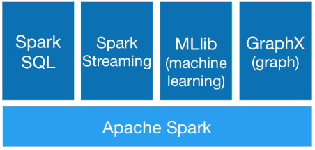
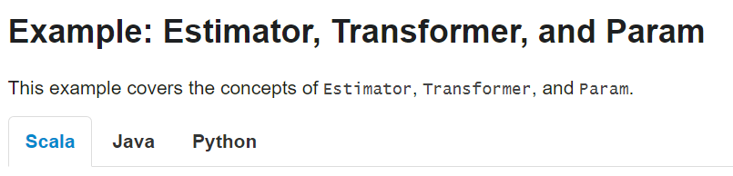
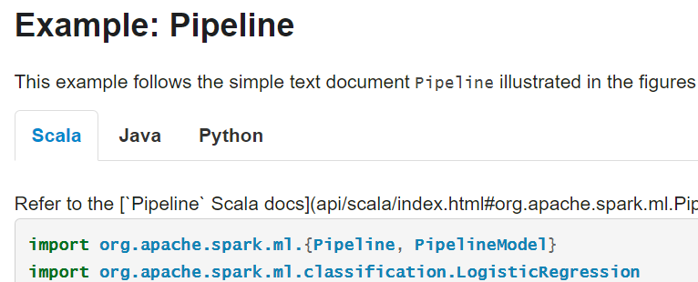

sparklyr: R interface to Apache Spark machine learning algorithms with dplyr back-end
Marcin Kosinski
May 13, 2017
meet(R) in TriCity 5
About me
About me

sparklyr = integRation
sparklyr = integRation
- Apache Spark
- Spark MLlib (machine learning library)
- R (data science) language
- dplyr R package
- sparklyr: dplyr back-end for Spark MLlib executed from R
Apache Spark
Spark - highlights
Apache Spark™ is a fast and general engine for large-scale data processing.
Write applications quickly in Java, Scala, Python, R.
./bin/spark-shell --master local[N] # N - threads / local
./bin/pyspark --master mesos://host:5050 # Mesos cluster
./bin/sparkR --master --master yarn --deploy-mode client Unlike Spark standalone and Mesos modes, in which the master’s address is specified in the --master parameter, in YARN mode the ResourceManager’s address is picked up from the Hadoop configuration.
Thus, the --master parameter is yarn.
Spark - Generality

Spark powers a stack of libraries including SQL and DataFrames, MLlib for machine learning, GraphX, and Spark Streaming. You can combine these libraries seamlessly in the same application.
Modules built on Spark:
- Spark Streaming: processing real-time data streams
- Spark SQL, Datasets, and DataFrames: support for structured data and relational queries
- MLlib: built-in machine learning library
- GraphX: Spark’s new API for graph processing
Spark - Runs Everywhere
You can run Spark using its standalone cluster mode, on EC2, on Hadoop YARN, or on Apache Mesos. Access data in HDFS, Cassandra, HBase, Hive, Tachyon, and any Hadoop data source.
Spark - Where to Go from Here?
Spark MLlib
Machine Learning Library (MLlib) Guide
MLlib is Spark’s machine learning (ML) library. Its goal is to make practical machine learning scalable and easy. At a high level, it provides tools such as:
- ML Algorithms: common learning algorithms such as classification, regression, clustering, and collaborative filtering
- Featurization: feature extraction, transformation, dimensionality reduction, and selection
- Pipelines: tools for constructing, evaluating, and tuning ML Pipelines
- Persistence: saving and load algorithms, models, and Pipelines
- Utilities: linear algebra, statistics, data handling, etc.
MLlib can be accessed with
 
Where is R?
SparkR (R on Spark) - Machine Learning
SparkR supports the following machine learning algorithms currently:
- spark.glm or glm: Generalized Linear Model
- spark.survreg: Accelerated Failure Time (AFT) Survival Regression Model
- spark.naiveBayes: Naive Bayes Model
- spark.kmeans: K-Means Model
- spark.logit: Logistic Regression Model
- spark.isoreg: Isotonic Regression Model
- spark.gaussianMixture: Gaussian Mixture Model
- spark.lda: Latent Dirichlet Allocation (LDA) Model
- spark.mlp: Multilayer Perceptron Classification Model
- spark.gbt: Gradient Boosted Tree Model for Regression and Classification
- spark.randomForest: Random Forest Model for Regression and Classification
- spark.als: Alternating Least Squares (ALS) matrix factorization Model
- spark.kstest: Kolmogorov-Smirnov Test
SparkR is not sparklyr. When I learned sparklyr, the SparkR provided only
glm.
R
R
Open source programming language and software environment for statistical computing and graphics.
Language of Data Science
Key tool in the statistician toolbox.
Learn R
- Warsaw R Enthusiast Group
- Data Crunchers / Pogromcy Danych Massive Open Online Course
- Advanced R by Hadley Wickham
- R packages by Hadley Wickham
- Extending R by John M. Chambers
- The Elements of Statistical Learning by T. Hastie, R. Tibshiriani, J. Friedman
dplyr
dplyr:
A Grammar of Data Manipulation
#1 R Top Package w/ 113,363 monthly distinct downloads
dplyr is designed to abstract over how the data is stored.
- Convenient pipe operator
%>%(also in the magrittr package) - Easy unified R interface to many (SQL like) databases
- Tidy functions for the most common data manipulations

If you are new to dplyr, the best place to start is the data import chapter in R for data science.
install.packages("dplyr")%>%
Pipe an object forward into a function or call expression.
x %>% f == f(x)
x %>% f(y) == f(x, y)
x %>% f(y, arg = ., z) == f(y, arg = x, z)car_data <-
mtcars %>%
subset(hp > 100) %>%
aggregate(. ~ cyl, data = ., FUN = . %>% mean %>% round(2)) %>%
transform(kpl = mpg %>% multiply_by(0.4251)) %>%
print
# A horrific alternative would be to write
car_data <-
transform(aggregate(. ~ cyl,
data = subset(mtcars, hp > 100),
FUN = function(x) round(mean(x, 2))),
kpl = mpg*0.4251)(source magrittr vignette)
dplyr: tidy functionalities for most common data operations
dplyr is a grammar of data manipulation, providing a consistent set of verbs that help you solve the most common data manipulation challenges:
mutate()adds new variables (functions of existing variables)select()picks variables based on their names.filter()picks cases based on their values.summarise()reduces multiple values down to a single summary.arrange()changes the ordering of the rows.
(source dplyr README)
dplyr: basic example 1
library(dplyr)
starwars %>%
filter(species == "Droid") %>%
select(name, mass, height, ends_with("color")) %>%
mutate(name, bmi = mass / ((height / 100) ^ 2)) %>%
arrange(desc(mass))# A tibble: 5 × 7
name mass height hair_color skin_color eye_color bmi
<chr> <dbl> <int> <chr> <chr> <chr> <dbl>
1 IG-88 140 200 none metal red 35.00000
2 C-3PO 75 167 <NA> gold yellow 26.89232
3 R2-D2 32 96 <NA> white, blue red 34.72222
4 R5-D4 32 97 <NA> white, red red 34.00999
5 BB8 NA NA none none black NAdplyr: basic example 2
starwars %>%
group_by(species) %>%
summarise(
n = n(),
mass = mean(mass, na.rm = TRUE)
) %>%
filter(n > 1)# A tibble: 9 × 3
species n mass
<chr> <int> <dbl>
1 Droid 5 69.75000
2 Gungan 3 74.00000
3 Human 35 82.78182
4 Kaminoan 2 88.00000
5 Mirialan 2 53.10000
6 Twi'lek 2 55.00000
7 Wookiee 2 124.00000
8 Zabrak 2 80.00000
9 <NA> 5 48.00000_
_
Functions with _ extension are used to work with characters.
attr <- "attribute_name"
response <- "response_name"
# dplyr_characters <- function(attr, response) {
df1 <- df %>%
select_("some_name", attr, response) %>%
mutate_(.dots = setNames(list(attr, attr)) %>%
rename_(.dots = setNames(response, "values"))
# return(df1)
# }This can be useful in the functions’ parametrization.
dplyr: databases unified interface
> src_sqlite(), src_mysql(), src_postgres() and src_bigquery() are also supported by dplyr
[1] TRUElibrary(nycflights13)
my_db <- src_sqlite("my_db.sqlite3", create = T)
flights_sqlite <- copy_to(my_db, flights, temporary = FALSE, overwrite = TRUE)
# once the data is in the databse, it can be extracted with
flights_sqlite <- tbl(my_db, "flights") # OR
flights_sqlite <- tbl(my_db, sql("SELECT * FROM flights"))select(flights_sqlite, year:day, dep_delay, arr_delay) %>%
filter(dep_delay > 240)Source: query [?? x 5]
Database: sqlite 3.11.1 [my_db.sqlite3]
year month day dep_delay arr_delay
<int> <int> <int> <dbl> <dbl>
1 2013 1 1 853 851
2 2013 1 1 290 338
3 2013 1 1 260 263
4 2013 1 1 255 250
5 2013 1 1 285 246
6 2013 1 1 379 456
7 2013 1 2 268 288
8 2013 1 2 334 323
9 2013 1 2 337 368
10 2013 1 2 379 359
# ... with more rowsdplyr: databases unified interface - laziness
c1 <- filter(flights_sqlite, year == 2013, month == 1, day == 1)
c2 <- select(c1, year, month, day, carrier, dep_delay, air_time, distance)
c3 <- mutate(c2, speed = distance / air_time * 60)
c4 <- arrange(c3, year, month, day, carrier) Suprisingly, this sequence of operations never actually touches the database.
It’s not until you ask for the data (e.g. by printing c4) that dplyr generates the SQL and requests the results from the database.
Even then it only pulls down 10 rows.
To pull down all the results use collect()
explain(c4) # c4$query does not longer works anymoreSELECT `year`, `month`, `day`, `carrier`, `dep_delay`, `air_time`, `distance`, `distance` / `air_time` * 60.0 AS `speed`
FROM (SELECT `year` AS `year`, `month` AS `month`, `day` AS `day`, `carrier` AS `carrier`, `dep_delay` AS `dep_delay`, `air_time` AS `air_time`, `distance` AS `distance`
FROM (SELECT *
FROM `flights`
WHERE ((`year` = 2013.0) AND (`month` = 1.0) AND (`day` = 1.0))))
ORDER BY `year`, `month`, `day`, `carrier`
<PLAN>
addr opcode p1 p2 p3 p4 p5 comment
1 0 Init 0 54 0 00 NA
2 1 SorterOpen 4 9 0 k(1,B) 00 NA
3 2 OpenRead 3 2 0 19 00 NA
4 3 Rewind 3 35 0 00 NA
5 4 Column 3 0 1 00 NA
6 5 Ne 2 34 1 (BINARY) 54 NAdplyr - one need to know
Code example - Can’t gather tibble in R (anymore)
library(tidyr) # dplyr 0.4.2
iris %>%
select(-Sepal.Width) %>%
tidyr::gather(Species) %>% head
Species Species value
1 setosa Sepal.Length 5.1
2 setosa Sepal.Length 4.9
3 setosa Sepal.Length 4.7
4 setosa Sepal.Length 4.6
5 setosa Sepal.Length 5.0
6 setosa Sepal.Length 5.4library(tidyr) # dplyr 0.4.3
# the same code
Error: Each variable must have a unique name.
Problem variables: 'Species'dplyr authors tends to develop the package without looking at backward compatibility.
sparklyr
sparklyr - integRation

- dplyr language/syntax/pipes
- Spark computational power
- Spark ML algorithms
All from R/RStudio.
sparklyr - about ML integRation
Thought about learnig Scala? Leave it - use sparklyr!
sparklyr provides bindings to Spark’s distributed machine learning library. In particular, sparklyr allows you to access the machine learning routines provided by the spark.ml package. Together with sparklyr’s dplyr interface, you can easily create and tune machine learning workflows on Spark, orchestrated entirely within R.
sparklyr provides three families of functions that you can use with Spark machine learning:
- Machine learning algorithms for analyzing data (
ml_*) - Feature transformers for manipulating individual features (
ft_*) - Functions for manipulating Spark DataFrames (
sdf_*)
(source sparklyr webpage)
sparklyr - setting up
# use 1) or 2) to install sparklyr
# 1) library(devtools);install_github('rstudio/sparklyr') - development verion
# 2) install.packages('CRAN') - release version
library(sparklyr)
spark_install(version = "2.0.0")
sc <- spark_connect(master="local") # local modeConnection to YARN
sc <-
spark_connect(master="yarn",
config = list(
default = list(
spark.submit.deployMode = "client",
spark.executor.instances = 20,
spark.executor.memory = "2G",
spark.executor.cores = 4,
spark.driver.memory = "4G")))One don’t have to specify config by himself. Specify parameters for Spark application with config.yml files so that you can benefit from many profiles (development, production).
In version 2.0.0 it is desired to name master yarn instead of yarn-client and passing the deployMode parameter, which is different from version 1.6.x.
All available parameters can be found in Running Spark on YARN documentation page.
dplyr and DBI interface on Spark
When connecting to YARN, it is most probable that you would like to use data tables that are stored on Hive. Remember that
Configuration of Hive is done by placing your hive-site.xml, core-site.xml (for security configuration), and hdfs-site.xml (for HDFS configuration) file in conf/.
where conf/ is set as HADOOP_CONF_DIR. Read more about using Hive tables from Spark
iris_tbl <- copy_to(sc, iris, "iris") # sc is a spark_connection
iris_tbl %>%
select(Petal_Length, Petal_Width) %>%
top_n(40, Petal_Width) %>%
arrange(Petal_Length) sparklyr package also provides interface for functions defined in DBI package
library(DBI)
dbListTables(sc)
dbGetQuery(sc, "use database_name")
data_tbl3 <- dbGetQuery(sc, "SELECT * from table_name")
dbListFields(sc, data_tbl3)
dbListTables(sc)Use Case:
Extending sparklyr to Compute Cost for K-means
Preparing Spark ML Algorithm
The basic example on how sparklyr invokes Scala code from Spark ML will be presented on K-means algorithm. If you check the code of sparklyr::ml_kmeans() function you will see that for input tbl_spark object, named x and character vector containing features’ names (featuers)
envir <- new.env(parent = emptyenv())
df <- spark_dataframe(x)
sc <- spark_connection(df)
df <- ml_prepare_features(df, features)
tdf <- ml_prepare_dataframe(df, features, ml.options = ml.options, envir = envir)sparklyr ensures that you have proper connection to spark data frame and prepares features in convenient form and naming convention. At the end it prepares a Spark DataFrame for Spark ML routines.
You can construct a simple model calling a Spark ML class like this
envir$model <- "org.apache.spark.ml.clustering.KMeans"
kmeans <- invoke_new(sc, envir$model)Invoking Spark ML Algorithm
…which invokes new object of class KMeans on which we can invoke parameters setters to change default parameters.
model <- kmeans %>%
invoke("setK", centers) %>%
invoke("setMaxIter", iter.max) %>%
invoke("setTol", tolerance) %>%
invoke("setFeaturesCol", envir$features)
# features where set in ml_prepare_dataframeFitting Spark ML Algorithm
For an existing object of KMeans class we can invoke its method called fit that is responsible
for starting the K-means clustering algorithm
fit <- model %>% invoke("fit", tdf)
# reminder:
# tdf <- ml_prepare_dataframe(df, features, ml.options = ml.options, envir = envir)which returns new object on which we can compute/extract, e.g centers of outputted clustering
kmmCenters <- invoke(fit, "clusterCenters")or the Within Set Sum of Squared Errors (called Cost)
kmmCost <- invoke(fit, "computeCost", tdf)which is my small contribution #173
or use spaklyr::ml_kmeans
iris_tbl %>%
select(Petal_Width, Petal_Length) %>%
ml_kmeans(centers = 3, compute.cost = TRUE) %>%
print()K-means clustering with 3 clusters
Cluster centers:
Petal_Width Petal_Length
1 1.359259 4.292593
2 2.047826 5.626087
3 0.246000 1.462000
Within Set Sum of Squared Errors = 31.41289All that can be better understood if we’ll have a look on Spark ML documentation for KMeans . Be carefull not to confuse with Spark MLlib where methods and parameters have different names than those in Spark ML.
The documentation enabled me to provide simple update for ml_kmeans() (#179) so that we can specify tol (tolerance) parameter in ml_kmeans() to support tolerance of convergence.
Questions?
Thank you for your attention
If you liked the presentation, then join next Warsaw R Enthusiasts Meetup SER XXVI - Wizualizacje Modeli Statystycznych (Thursday, May 25, 2017).
What is a Spark DataFrame
Check the documentation: Datasets and DataFrames